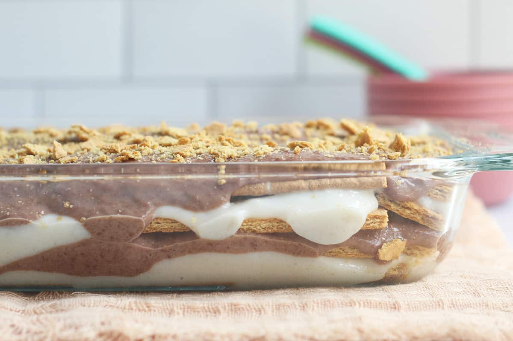

Mango graham cake is a popular dessert in the Philippines. Also called mango float, it’s cold, sweet and so easy to make. Just layer graham crackers, sweetened cream, mangoes and enjoy.
Ingredients:
- Heavy cream or whipping cream – you want to go with full fat (this means has fat content of at least 36%) because it whips better
- sweetened Condensed Milk
- Graham cracker cookies – I like using whole wheat because it has a nutty taste but you can use regular ones if you like
- Fresh, ripe mangoes
Directions
- Combine the cream, sweetened condensed milk and vanilla extract in a large bowl. Beat with a hand mixer until double in volume, about 4 minutes.
- Spread a scant 2 cups of cream in an 8-inch square baking dish, followed by 1/2 cup graham cracker crumbs and a third of the mangoes. Continue alternating layers for a total of 9 layers, ending with mango. Chill at least 8 hours and up to overnight.
Return to Top